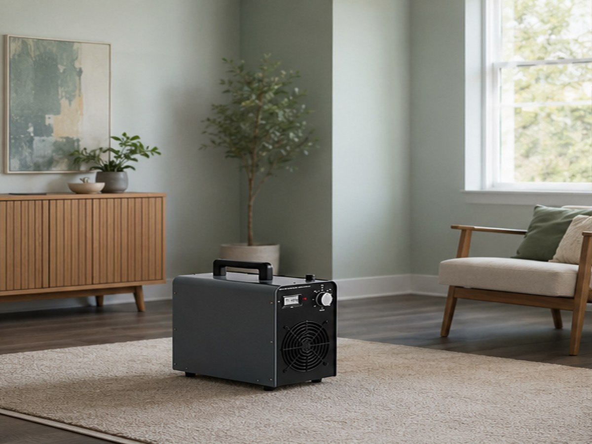
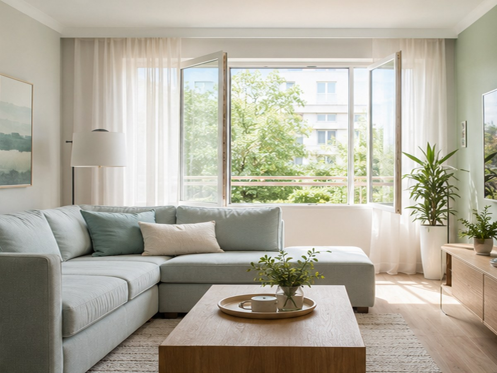
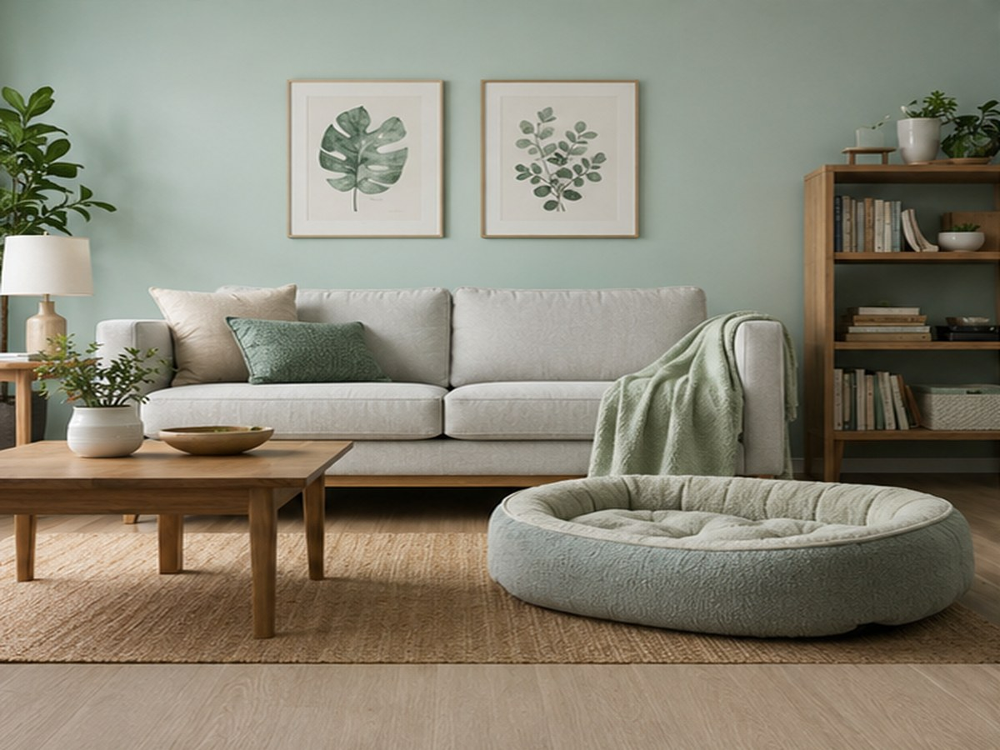

Rossz szagok
Az Ecozone-tech technológia a leghatékonyabb környezetbarát szagtalanító eljárás, amely nem csupán a levegőből, hanem a porózus felületekből is lebontja a szagokat okozó molekulákat.
Hogyan történik a szagtalanítás?
A szagtalanításhoz nagyteljesítményű mobil ózongenerátort használunk. A kezelés 60-240 percet vehet igénybe, a helyiség méretétől függően. A kezelés alatt nem lehet a helyiségben tartózkodni, de kollégáink folyamatosan ellenőrzik a hatékonyságot, majd a kezelés végén az ózonkoncentrációt is mérik a biztonságos átadás érdekében.

Az ózon hatása a különböző szagokra
Az ózon megszünteti a dohányfüstben található fenol gázok által okozott irritációt és szagot. Sokkal hatékonyabb, mint a hagyományos illatosítók vagy légszűrők, mert lebontja a szagmolekulákat. Ideális megoldás költözés előtti fertőtlenítésre és a dohos vagy égés utáni szagok eltávolítására.

Építési és kisállat szagok
Az építkezés után visszamaradt vegyszerszagok, formaldehidek is hatékonyan eltávolíthatók ózonnal, megakadályozva, hogy a bútorok átvegyék a szagokat. Emellett a háziállatok okozta kellemetlen szagokat is eredményesen szünteti meg az ózon, miközben fertőtleníti a levegőt és a felületeket.

Tippek
- Ha festéssel szeretné eltüntetni a kellemetlen szagokat, a szagtalanítást mindig a festés előtt ajánlott elvégezni.
- Ha tervezi a kellemetlen szagú szőnyeg, bútorkárpit vagy más nagyobb lakástextília nedves kitisztítását is, akkor még előtte ajánlatos a szagtalanító eljárást elvégezni.